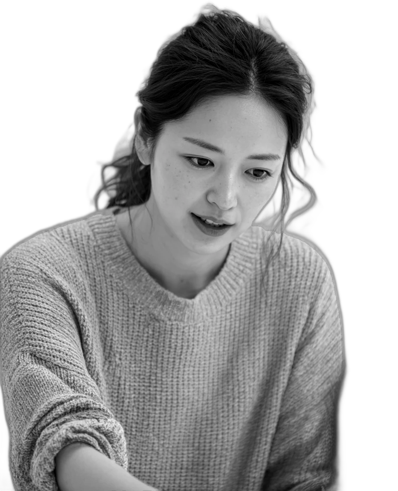

2027 年度 新 規 生 募 集
湖南ゼミナール
滋賀県湖南市 ＊架空の塾です
わかるまで、
横にいます。
一人の先生が見るのは、同じ時間に三人までです。 解けなかった問題は、解けるまでその場で一緒にやります。 宿題は、やってくる前提では出しません。

いまの学年でえらぶ
小学部
小3 — 小6
週1日 60分／算数・国語
そろばんと読書の時間があります
中学部
中1 — 中3
週2日 90分／5教科
テスト前の2週間は毎日来られます
高校部
高1 — 高3
週1日 120分／個別
推薦の面接と小論文も見ます
授 業 料
月 8,800 円〜
教材費・入会金なし
時 間
17:00 — 21:30
部活のあとでも間に合う
場 所
湖南市 石部駅前
自転車置き場あり
自主制作 / Kinoshita Studio —— 架空の塾です
まず、授業を見に来てください。
体験は2回まで無料／入会の話はしません
湖南ゼミナール（架空）
0748-00-0000 kounan-zemi.example.jp